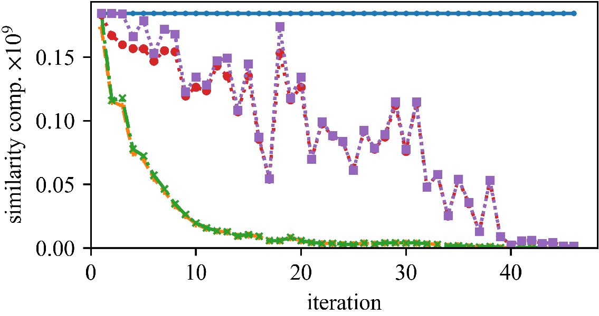
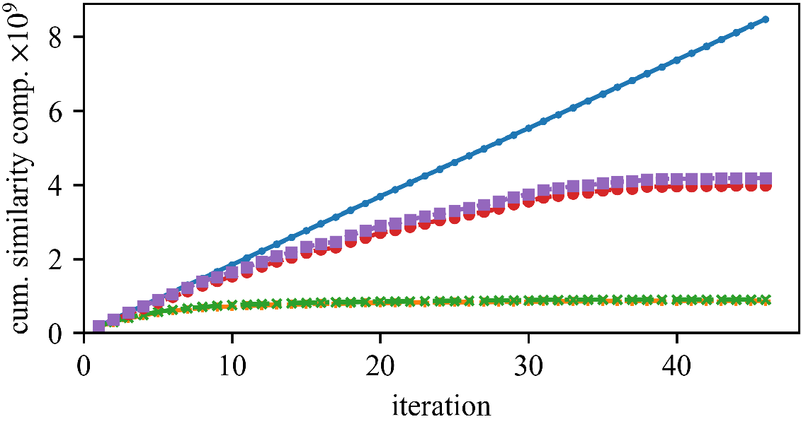
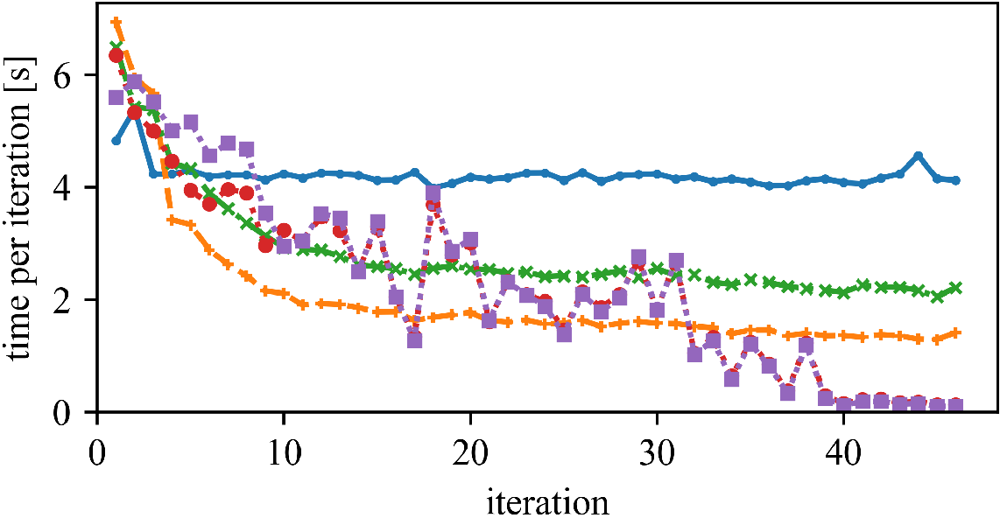
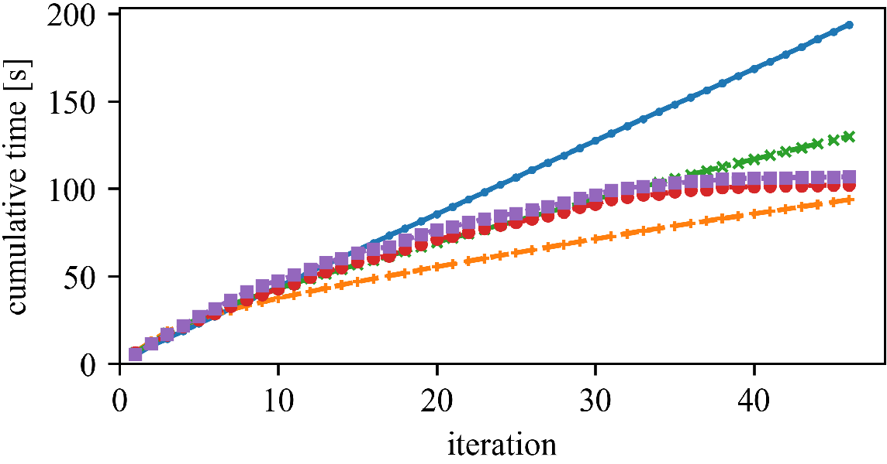
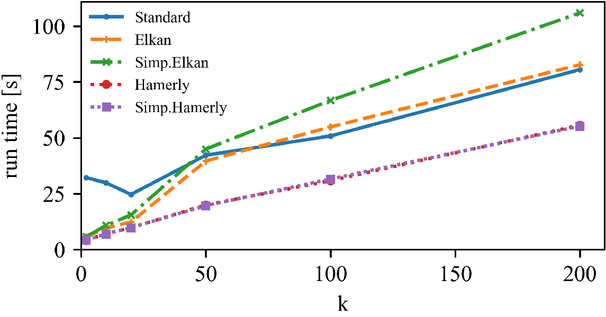
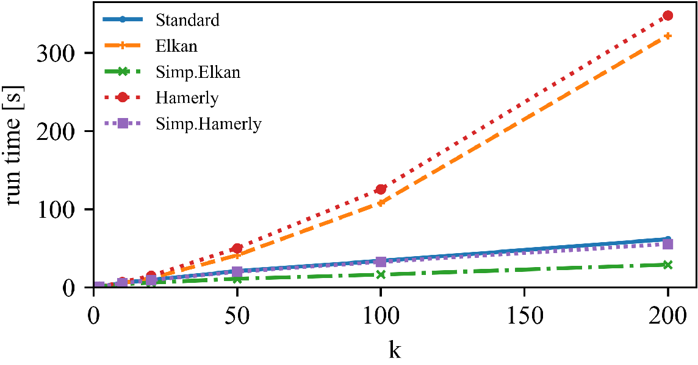

Accelerating Spherical k-Means
Erich Schubert, Andreas Lang and Gloria Feher
Spherical k-means is a widely used clustering algorithm for sparse and high-dimensional data such as document vectors. While several improvements and accelerations have been introduced for the original k-means algorithm, not all easily translate to the spherical variant: Many acceleration techniques, such as the algorithms of Elkan and Hamerly, rely on the triangle inequality of Euclidean distances. However, spherical k-means uses cosine similarities instead of distances for computational efficiency. In this paper, we incorporate the Elkan and Hamerly accelerations to the spherical k-means algorithm working directly with the cosines instead of Euclidean distances to obtain a substantial speedup and evaluate these spherical accelerations on real data.
Standard k-means
Standard k-means minimizes the sum-of-squares: \[ \sum\nolimits_C \sum\nolimits_{x\in C} \lVert x-\mu_C \rVert^2 \]
Spherical k-means maximizes the sum of cosine similarities: \[ \sum\nolimits_C \sum\nolimits_{x\in C} \frac{\left<x,\mu_C\right>}{\lVert x\rVert\cdot\lVert\mu_C\rVert} = \sum\nolimits_C \sum\nolimits_{x\in C} \left<\tfrac{x}{\lVert x\rVert},\tfrac{\mu_C}{\lVert\mu_C\rVert}\right> \] On normalized data, and with normalized means, this is the same.
Standard algorithm for spherical k-means
- choose initial cluster centers
- assign each point to the most similar center
- recompute the cluster center and normalize it
- repeat 2.-3. until no point is reassigned
The standard algorithms are slow
In step 2, we compute O(N·k) similarities, but most of the time we do not reassign points.
Elkan and Hamerly pioneered accelerating k-means by avoiding many of these computations using metric bounds.
If for the current assigned mean µx and some other mean µo we have upper and lower bounds u(x), l(x) such that
then we know that point x cannot be closer to µo, without computing d(x, µo).
For standard k-means, we can use Euclidean-based bounds, using the triangle inequality.
Cosine similarity is not a metric. While we can exploit the relationship to Euclidean distance, this yields a suboptimal bound. We can obtain better bounds (and better precision) by working with the triangle inequality for cosine similarity (c.f., Schubert 2021, at this conference).
Bounds for cosine similarity
We maintain similar bounds (for the similarites, not distances) to satisfy: \[ l(i) \leq \left<x(i),c(a(i))\right> \qquad u(i,j) \geq \left<x(i),c(j)\right> \qquad u(i) \geq \max_{j\neq a(i)}\left<x(i),c(j)\right> \] where u(i,j) is used for a variant of Elkan’s algorithm, and u(i) for a variant of Hamerly’s algorithm. a(i) is the current cluster assignment of object i.
If l(i) ≧ u(i,j), then 〈x(i), c(a(i))〉 ≧ l(i) ≧ u(i,j) ≧ 〈x(i),c(j)〉.
Hence we do not need to recompute these similarities if l(i)≧ u(i,j).
Using the triangle inequalites of Schubert 2021, we get:
\[
l(i) \leftarrow l(i)\cdot p(a(i))-\sqrt{(1-l(i)^2)\cdot(1-p(a(i))^2)}
\]
\[
u(i,j) \leftarrow u(i,j)\cdot p(j)+\sqrt{(1-u(i,j)^2)\cdot(1-p(j)^2)}
\]
\[
u(i) \leftarrow u(i)\cdot \max_{j\neq a(i)}p(j)+\sqrt{(1-u(i,j)^2)\cdot(1-\min_{j\neq a(i)}p(j)^2)}
\]
where p(j):=〈c(j),c’(j)〉 is how much center c(j) changed (similarity to the previous location) and a(i) denotes the current cluster assignment of object i.
Experimental results
We can save a substantial amount of similarity computations.
 
But (as observed by Newling for k-means), maintaining the bounds does also require many computations, and saved similarity computations do not always translate into a reduced run time.
 
The speedup (and the best approach) can vary whether we have high or low dimensionality, and few or many objects.
 
Left: DBLP Authors-Conferences (higher N, lower d)
Right: DBLP Conferences-Authors (lower N, higher d)
For lower dimensionality, the Simplified Hamerly variant is usually best, for high dimensionality and large k the Simplified Elkan variant.